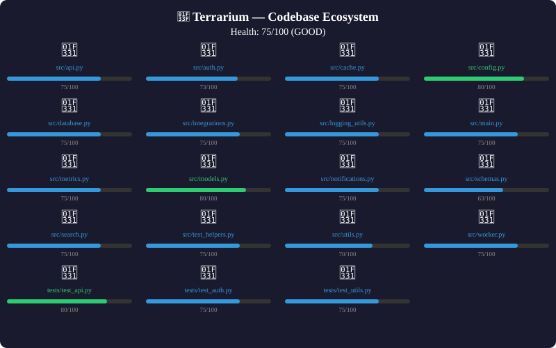

Terrarium analyzes your Python codebase through 8 dimensions: complexity, churn, coverage, dead code, fatigue, infection, anomalies, and drift. Without adapters: 75/100 GOOD. With all 8 adapters: 57/100 FAIR. The full picture reveals what static analysis alone cannot see.
Real analysis of demo/synthetic_project — 19 Python files scanned
Every terrarium command produces actionable output
health — Static analysis alone. Scans files, complexity, coverage, churn. Looks fine — 75/100 GOOD.
health + 8 adapters — The full picture. Adapters reveal infection spread, anomaly patterns, stress cracks, and churn territories that static analysis misses. Score drops from 75 to 57.
watch — View your entire codebase as a living ecosystem. Each module is an organism with a health score. The terminal render shows the full tree with visual health indicators.
diagnose — Deep-dive into a single module. Terrarium analyzes complexity, coverage, churn, and stability to produce a diagnosis with symptoms, treatment recommendations, and prognosis.
Generated with terrarium snapshot --format svg

snapshot — Generate CI-ready snapshots in SVG or text format. The SVG renders the full ecosystem as a visual graph with health-colored organisms, dependency connections, and critical markers.
Real results from running terrarium on its own codebase
Six dimensions of code health, computed from static analysis and git history
Measures branching complexity per function. Threshold: 15. auth.py exceeds this at 16.
Analyzes commit frequency, age, and recency per file from git history.
Auto-detects coverage reports. All modules in the demo show 0% — a clear signal to add tests.
Identifies likely dead modules by age, deprecation markers, and import analysis.
Classifies modules as seedlings, saplings, mature, or old-growth based on age and change frequency.
Simple but effective — module size contributes to overall health scoring.
Interactive health dashboard and 6-month timeline
One command. No dependencies. Works immediately.
pip install terrarium
Point at any Python project. Terrarium does the rest.
terrarium health ./my-project
Fix what matters. Ignore the noise.
terrarium diagnose ./my-project/src/auth.py
Plug in ussyverse siblings for deeper analysis. Terrarium works fine without any of them.
Paris' Law crack growth from stress intensity in code changes
SIR/SEIR infection modeling for bug propagation
Anomaly detection for unusual code patterns
Kolmogorov complexity — information density scoring
Co-change territory clustering from git history
Ecological succession: pioneer → seral → climax
Workspace drift and dev environment schema
Dev state memory pressure: open files, processes